읽는 법
강의마다 순서가 같아. 이 강의가 던지는 질문, 그 질문에 답한 방법들 (문제 · 핵심 · 이전과 차이), 그리고 다음 강의로 넘어가는 이유. 방법 옆의 p.N은 PDF 페이지라서, 헷갈리면 그 장만 열어보면 돼.
네 분야 개념으로 바꿔 말한 거. 슬라이드 밖이라 시험엔 안 나와. 이해용이야.
슬라이드 문장을 살짝 비틀어서 T/F나 빈칸으로 내기 좋은 곳.
이 강의의 한계가 다음 강의의 질문이 되는 연결고리.
강의 끝마다 셀프 체크 3문제가 있어 (영어 지문, 눌러야 답이 보임). 다 읽은 강의는 "다 봤음"에 체크해 둬. 이 브라우저에만 저장돼.
큰 그림: target은 어디서 오나
supervised learning에선 사람이 target(label)을 줘. 이 수업은 그 사람 손을 하나씩 빼 보는 방법들의 모음이야. 아래 표를 위에서 아래로 읽으면 거의 수업 순서랑 같아.
| target은 여기서 옴 | 방식 · 대표 방법 | 강의 |
|---|---|---|
| 사람이 단 label | Supervised pretraining (ImageNet) | L01–L02 |
| 내가 가한 변환 자체 (회전 각도, 패치 위치, 지운 픽셀, 지운 색) | Pretext task · RotNet, Jigsaw, Colorization | L02 |
| 같은 이미지의 다른 view = positive, 나머지 = negative | Contrastive · InfoNCE, SimCLR, MoCo | L03–L05 |
| 천천히 따라오는 EMA teacher의 출력 | Self-distillation · BYOL, DINO | L04 |
| 두 view의 feature 상관행렬을 identity로 | Redundancy reduction · Barlow Twins | L04 |
| cluster 번호 · prototype code | Clustering · DeepCluster, SwAV | L05 |
| 짝지어진 caption (언어) | CLIP, X-CLR(soft target), SynCLR | L03–L05 |
| 같은 class label (다시 사람) | SupCon | L05 |
| perturbation을 준 예측끼리 서로 | Consistency · Π-model, Mean Teacher, UDA | L06 |
| 모델 자신의 confident한 예측 → hard label | Pseudo label · Pseudo-Label, FixMatch | L07 |
L01–L05 · Self-supervised
label이 하나도 없어. 목표는 좋은 encoder를 만드는 거고, 평가는 linear probing으로 해.
L06–L07 · Semi-supervised
label 조금 + unlabeled 많이. 목표는 그 task를 잘 푸는 모델이야. 식은 L = Ls + μ(t)·Lu.
self-supervised와 semi-supervised 둘 다 "SSL"로 줄여 쓰는 경우가 많아. 지문에 labeled data 얘기가 같이 나오면 semi-supervised야.
7강을 한 줄씩
- L01좋은 representation이 뭔데?쓸데없는 건 버리고(compression) 안 보이는 걸 맞히는(prediction) 표현.
- L02label 없이 supervision을 만들 수 있나?data를 일부러 망가뜨리고 원래대로 맞히게 하는 pretext task. 근데 사람이 하나하나 설계해야 하고 일반성이 약해.
- L03"같은 건 가깝게, 다른 건 멀게"를 loss로 쓰면?contrastive loss 계보가 InfoNCE로 모여.
- L04실제로 잘 돌리려면? negative 없이도 될까?SimCLR(negative 많이) vs BYOL · Barlow Twins · DINO(negative 없이).
- L05negative를 싸게 많이 + 다른 supervision은?MoCo(queue), SwAV(cluster), CLIP(언어), SupCon(label).
- L06label이 조금 있으면? ① consistencyΠ-model → Temporal Ensembling → Mean Teacher, 그다음 perturbation과 teacher 개선.
- L07② pseudo label틀린 label 문제(confirmation bias)를 줄이는 방법들 → FixMatch → threshold 개선.
7강 방법들을 연도순으로: 계보가 어떻게 이어지나
용어 먼저 깔기
교수님이 "다들 알지?" 하고 넘어간 단어들이야. 여기만 잡혀도 세미나 슬라이드가 읽혀. 보라색 줄은 RL 쪽 대응 개념.
모델 부품
- Encoder f · backboneL01 p.12
- 입력 x를 벡터 z로 바꾸는 본체 네트워크 (ResNet, ViT). 슬라이드 표기는 z = f(x).observation encoder. pixel → latent state.
- Representation · embedding · featureL01 p.11
- 그 결과 벡터 z. 좋은 z는 쓸모 있는 정보는 남기고 배경·조명·노이즈 같은 건 버린 것.
- Projection head gL04 p.23–25
- encoder 뒤에 붙는 작은 MLP. loss는 z = g(h)에서 계산하고, 학습이 끝나면 g는 버리고 h를 써 (SimCLR "throw away g").
- PredictorL04 p.30
- BYOL에서 online 쪽에만 붙는 작은 MLP. 두 branch를 비대칭으로 만드는 장치야.
- Prototype · codeL05 p.26–30
- prototype은 학습되는 cluster 중심 벡터. feature를 prototype에 배정한 결과가 code (SwAV).
- CLS token · patch tokenL04 p.55–67
- ViT에서 이미지 전체를 대표하는 토큰 vs 패치 하나하나의 토큰. image-level vs patch-level(dense) feature (DINOv2).
학습 · 평가 설정
- Pretext taskL02 p.16, p.20
- 진짜 목적이 아니라 encoder를 훈련시키려고 만든 가짜 과제 (회전 맞히기 등). label은 data에서 자동으로 나와.auxiliary task (본 목적은 아니지만 encoder를 키우는 보조 과제).
- Downstream taskL02 p.16
- 진짜 하고 싶은 일 (분류, detection, segmentation). 보통 label이 적어.
- Linear probingL02 p.18
- encoder를 얼려 놓고 linear classifier 하나만 학습해서 representation 품질을 재는 것. fine-tuning은 encoder까지 다시 학습.
- Zero-shotL05 p.33
- 그 task용 학습 없이 바로 푸는 것. CLIP은 "a photo of a {class}" 같은 text prompt랑 비교해서 분류해.
- Augmentation · view
- 같은 이미지를 crop, color jitter 등으로 바꾼 버전 하나가 view. 같은 이미지에서 나온 두 view가 positive pair.
- Collapse
- 모든 입력이 같은 벡터로 뭉개지는 것. loss는 낮은데 쓸모가 없어. negative 없는 방법(BYOL, Barlow Twins, DINO)은 각자 이걸 막는 장치가 있어.
Contrastive
- Anchor(query) · positive · negativeL03 p.31
- 기준 샘플, 가까워야 할 샘플, 멀어져야 할 샘플.
- Hard · false negativeL03 p.14 · L04 p.7
- hard negative = anchor와 가까운데 다른 class라서 배울 거리가 많은 것. false negative = negative로 뽑혔는데 사실 같은 class인 것.
- Temperature τ
- softmax에 넣기 전에 similarity를 τ로 나눠. 작을수록 분포가 뾰족해져서 어려운 negative에 집중해.Boltzmann(softmax) policy의 temperature와 같은 역할.
- InfoNCE · NT-XentL03 p.23
- N개 후보 중에서 positive를 맞히는 N-way softmax cross-entropy. 사실상 이 수업의 기본 loss야.
- Memory bank · queue · dictionaryL05 p.4
- 이전 step에서 계산해 둔 embedding을 negative로 재활용하는 저장소.replay buffer처럼 "조금 오래된 데이터를 재사용"하는 trade-off.
temperature τ가 softmax를 어떻게 바꾸나
illustrativesoftmax(s/τ)야. τ를 줄이면 제일 큰 s 쪽으로 분포가 뾰족해지고 (positive는 더 확실해지고, anchor와 가까운 hard negative neg1이 나머지 negative보다 큰 몫을 가져가), τ를 키우면 8개가 거의 균등해져 (loss = −log p(positive)). SimCLR · MoCo · DINO · X-CLR은 s/τ로 나누고, CLIP만 logits * exp(t)로 곱해 (learned, exp(t) = 1/τ). 개념 그림이고 similarity 값은 지어낸 거야. (L03 p.29 Soft-NN · p.68 X-CLR · L05 p.35 CLIP)Teacher – student
- Student · teacher= online·target, query·key
- 같은 구조의 네트워크 두 개. gradient는 student만 받고, teacher는 student를 천천히 따라가. 방법마다 이름만 달라.
- EMA · momentum update
- θt ← m·θt + (1−m)·θs, m은 0.99–0.999 정도.target network의 Polyak(soft) update와 같은 식. SAC의 τ = 0.005는 m = 0.995인 셈.
- Stop-gradient ·
detach - target 쪽으로는 gradient를 안 흘려.TD target r + γQtarget에 gradient를 안 흘리는 semi-gradient와 같은 이유. 움직이는 target을 쫓다가 무너지지 않게.
- Distillation
- teacher의 출력(보통 확률 분포)을 student가 따라 하게 학습하는 것.
- Centering · sharpeningL04 p.40
- DINO teacher 출력에서 평균(center)을 빼고, 낮은 temperature로 뾰족하게 만드는 것. collapse를 막아.
Semi-supervised
- 목표식L06 p.8–10
- L = Ls + μ(t)·Lu. labeled에는 보통 supervised loss, unlabeled에는 Lu. μ(t)는 시간이 갈수록 커져.
- Consistency regularizationL06 p.15
- 입력이나 모델에 perturbation을 줘도 예측은 같아야 한다는 loss.
- Pseudo labelL07 p.4
- 모델이 confident하게 맞힌 예측을 정답처럼 써먹는 것.
- Confidence threshold τL07 p.42–48
- max 확률이 τ를 넘는 예측만 pseudo label로 써 (FixMatch). temperature τ와 기호만 같아.
- Weak · strong augmentation
- flip-and-shift 수준 vs RandAugment, CTAugment처럼 세게.
- Confirmation biasL07 p.20
- 틀린 pseudo label을 다시 배워서 오류가 쌓이는 것.자기 추정치로 target을 만드는 bootstrapping에서 오차가 누적되는 것 (overestimation bias)과 같은 계열.
- SharpeningL07 p.30–35
- pi1/T / Σj pj1/T. T가 작을수록 확신이 높아져 (MixMatch).
- SimCLR · MoCo · DINO · X-CLR의 τ,
t: softmax temperature (나눔). CLIP만* np.exp(t)로 곱해 (learned). - BYOL의 τ: EMA 계수. temperature 아님.
- FixMatch의 τ: confidence threshold.
- DINO 코드의
l: 숫자 1이 아니라 소문자 L (teacher momentum).
Introduction
질문좋은 representation이 뭔데?
수업 전체의 정의를 까는 강의야. 뒤 강의들의 함정이 여기 정의 문장에서 꽤 나와.
Rules → Patterns → Features → Representations → World Knowledge.
핵심사람이 넣는 지식은 줄고, data에서 배우는 것의 추상성·일반성은 커져. 이 수업은 4단계 Representations.

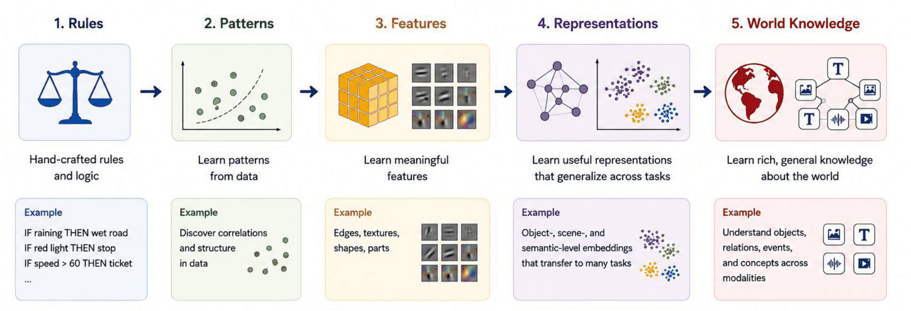
정의"a transformation of raw data into a form that makes downstream tasks easier", z = f(x).
포인트같은 사진도 Color Histogram / CNN feature / CLIP embedding처럼 여러 표현이 가능해.

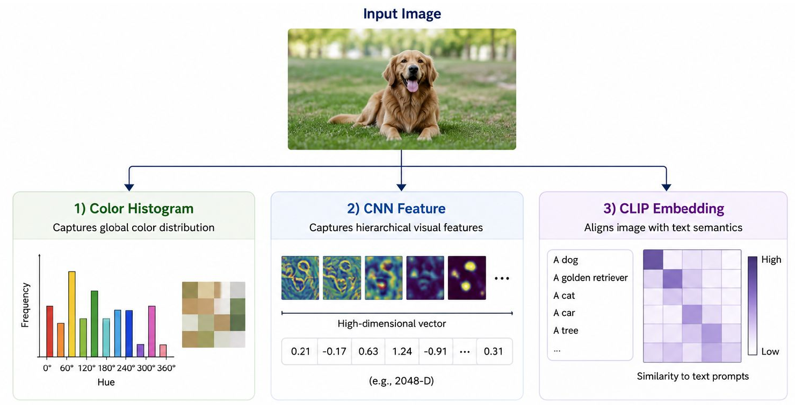
문제SIFT · HOG · SURF는 사람이 설계하고, task마다 새로 만들어야 해.
핵심CNN이 edge → texture → object part를 스스로 배우고, 한 번 배운 backbone을 detection·segmentation에 재사용. "Learn once, use everywhere."

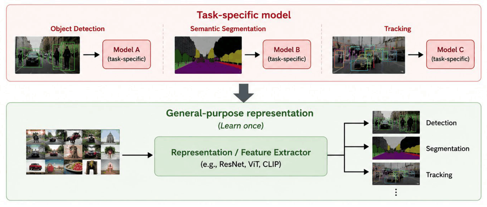
핵심essential characteristics만 남겨. 이점은 Less Memory, Invariance(nuisance 제거), Occam's Razor.
문장"Compression is not about losing information. It is about removing irrelevant information."
핵심관측 못 한 걸 추론해. Future (V-JEPA), Past, Missing data (MAE, inpainting).
CompressionAutoencoding · Contrastive · Clustering
PredictionFuture prediction · Imputation · Pretext tasks
덤Disentangled · Interpretable · Actionable · Transferable. 직접 목표가 아니라 결과로 따라오는 성질이야.

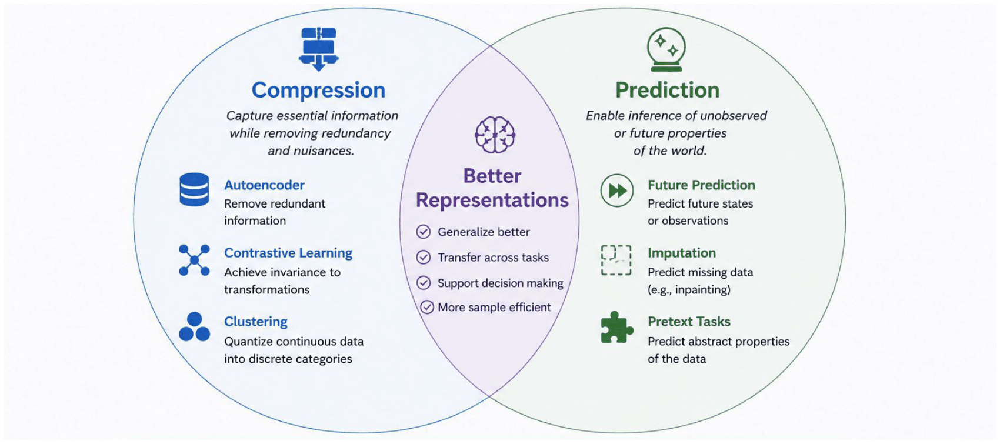
Types of Representation Learners: 6개를 원리별로
네가 매일 쓰는 pixel → latent state encoder가 정확히 여기서 말하는 f야. p.22의 Actionable과 sample efficient가 RL 쪽에서 representation을 신경 쓰는 이유고, Prediction의 Future 쪽은 world model이랑 같은 줄기야.
- Contrastive는 Prediction이 아니라 Compression 쪽 (p.23). Pretext tasks는 Prediction 쪽.
- "Compression = losing information"은 False.
좋은 representation을 배우고 싶은데 label은 비싸. 그럼 label 없이 배울 수 있나? → L02
셀프 체크
T/FCompression in representation learning means losing information to save memory.
False. 정보를 잃는 게 아니라 irrelevant 정보를 지우는 것 (p.19).
MCQOn p.23, contrastive learning is grouped under: (A) Prediction (B) Compression (C) Imputation (D) Pretext tasks
(B) Compression. invariance to viewing transformations를 얻는 쪽 (p.23).
빈칸A representation is "a transformation of raw data into a form that makes ______ tasks easier."
downstream (p.12)
Self-Supervised Learning
질문label 없이 supervision을 만들 수 있나?
답은 "data를 일부러 망가뜨리고, 원래대로 맞히게 하자"야. 회전 각도를 맞히려면 물체가 뭔지 알아야 하니까 encoder가 똑똑해진다는 논리.
문제label이 비싸 (ImageNet 14M장 = 22 human years). hashtag·GPS 같은 semi-automatic label은 noisy하고, video·long tail·의료 같은 새 domain은 label 달기가 더 어려워.
핵심"obtain labels from the data itself", "predict part of the data from other parts". pretext task로 encoder를 학습하고 downstream task로 transfer.
차이unsupervised(clustering, PCA)와 달리 data에서 자동으로 만든 명시적 예측 target이 있어.
핵심pretext 성능이 아니라 downstream 성능으로 평가해. frozen feature 위에 shallow(linear) head만 학습.
Hand-crafted pretext 5종
| 과제 | 뭘 맞히나 | 포인트 |
|---|---|---|
| Relative Position Doersch, ICCV 2015 · p.21–23 | 가운데 patch 기준 이웃 patch의 위치 (8-way) | local 공간 관계. gap·jitter로 shortcut 차단 |
| Context Encoders (Inpainting) Pathak, CVPR 2016 · p.24–28 | 지운 영역의 픽셀 | L2만 쓰면 blurry → L2 + adversarial |
| Jigsaw Noroozi & Favaro, ECCV 2016 · p.29–33 | 3×3 조각의 순열 번호 | 9! = 362,880 대신 Hamming distance가 최대인 64개 순열만 class로. global 공간 구조 |
| Colorization Zhang, ECCV 2016 · p.34–39 | 흑백(L)에서 색(ab) | regression은 색을 평균 내서 탁해짐 → 313-class classification |
| RotNet Gidaris, ICLR 2018 · p.40–43 | 0° / 90° / 180° / 270° 중 뭘 돌렸나 | 가장 단순. 돌린 각도가 곧 label |

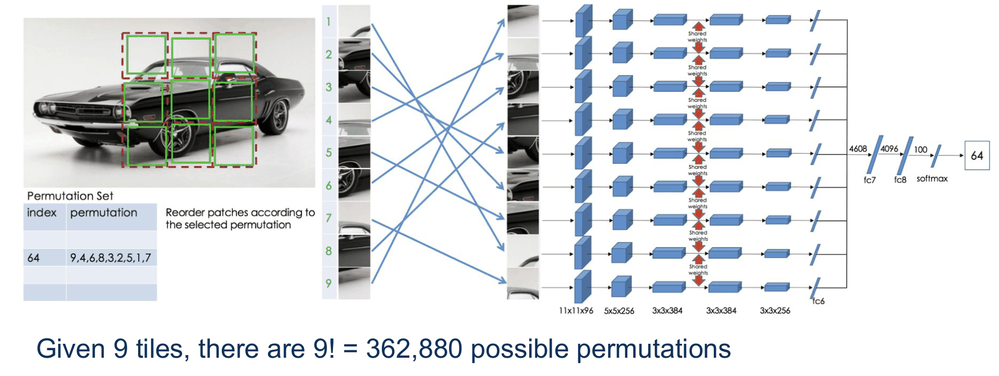
Colorization: regression은 색을 평균 내서 탁해져
illustrative


문제 1과제를 하나하나 고안하는 게 tedious해.
문제 2뒤쪽 layer가 그 과제에 특화돼서 general하지 않아 (Jigsaw로 학습하면 linear probe가 res4에서 최고, res5에서 떨어짐).
핵심망가진 조각으로 jigsaw + inpainting + colorization을 한 네트워크에서 동시에. shared backbone + task별 head.
한계여전히 사람이 고른 과제 묶음에 묶여 있어.
전환"변환을 맞혀라" 대신 "변환된 이미지들은 같은 object니까 가깝게, 다른 이미지는 멀게". 이게 contrastive learning의 출발점.
핵심video를 2×2×4로 나누고, 공간(2×2×1) 또는 시간(1×1×4) 방향으로 cube 4개를 뽑아 섞은 뒤 원래 순서를 맞혀 (4! × 2 = 48 class). 3D CNN tower 4개, weight 공유.
차이image jigsaw를 시공간으로 확장. 공간·시간을 같이 배우는 게 따로 배우는 것보다 나아.
Space-Time Cubic Puzzle: 2×2×4 grid에서 cube 뽑기

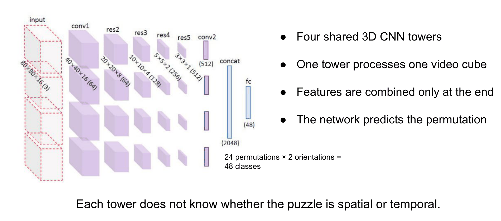
핵심video와 audio가 시간상 맞는지(in-sync) 아닌지(out-of-sync) 판별. contrastive loss로 두 stream을 같이 학습.
포인트negative 구성이 핵심이고, curriculum (easy negative 먼저 → hard negative 섞기)이 제일 좋아.

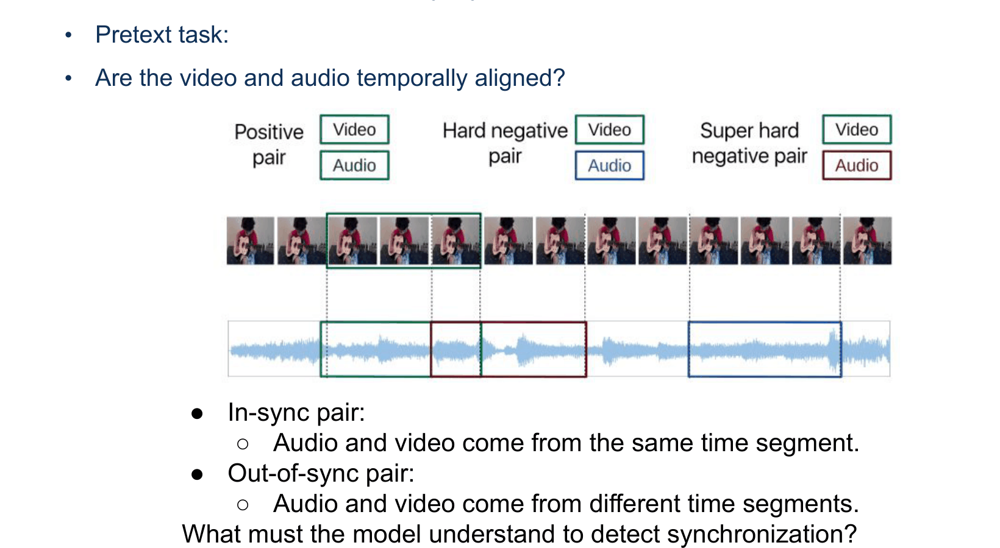
AVTS: negative를 어떻게 만드느냐 + curriculum
Invariancef(t(x)) = f(x). 변환해도 표현이 안 변해.
Equivariancef(t(x)) = φ(t, f(x)). 표현이 예측 가능하게 변해.
포인트분류엔 invariance가 좋지만 detection은 위치 정보, 꽃 분류는 색 정보가 필요해. pretext가 어떤 정보를 남길지를 정해.

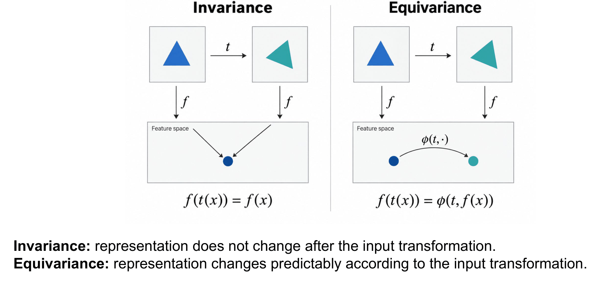
Invariance vs Equivariance
t를 가해. Invariance는 feature가 안 변해 (두 화살표가 같은 점), Equivariance는 입력이 변한 만큼 feature도 φ(t,·)로 예측 가능하게 변해. contrastive는 augmentation에 invariant해지면서 변환 정보를 버려. invariance는 φ = id인 equivariance의 특수한 경우야. (L02 p.75)핵심loss 3개. 같은 이미지·다른 변환 (invariant), 다른 이미지·같은 변환 (transformation representation 학습), 학습한 변환을 적용해서 예측 (equivariant).
차이변환 label(parameter) 없이 변환 표현을 배워.

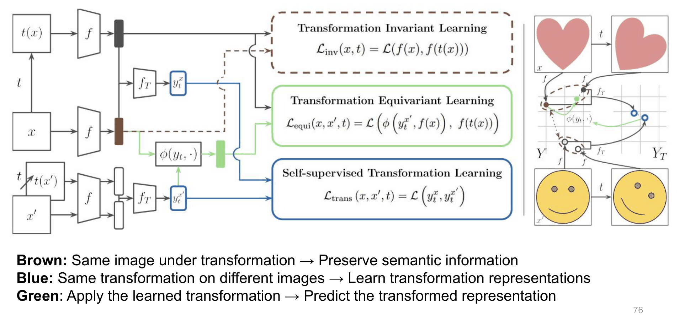
pretext task는 RL의 auxiliary task랑 같은 발상이야 (본 목적은 아니지만 encoder를 키우는 보조 과제). 엣지 연속성이나 색 통계로 jigsaw를 풀어 버리는 shortcut은 reward hacking이랑 비슷한 냄새가 나. 그리고 invariance vs equivariance는 로봇에서 특히 중요해. grasp하려면 물체의 위치·방향이 필요한데, crop·flip에 무조건 invariant하게 배우면 그 정보가 날아가.
- Colorization은 regression이 아니라 classification (313 bins).
- Jigsaw는 9! 전부가 아니라 64개 순열 (pairwise Hamming distance 최대).
- Inpainting에서 L2만 쓰면 blurry, adversarial만 쓰면 선명하지만 context와 안 맞아.
- SSL 평가는 pretext 정확도가 아니라 downstream 성능.
pretext는 사람이 일일이 설계해야 하고 마지막 layer가 그 과제에 특화돼. 그래서 "같은 건 가깝게, 다른 건 멀게"라는 일반 원리로 가. → L03
셀프 체크
T/FSSL methods are mainly judged by their accuracy on the pretext task.
False. frozen feature + shallow(linear) head로 본 downstream 성능 (p.18, p.46).
빈칸Colorization predicts the ab channels with ______ over 313 color bins, because regression averages plausible colors.
classification (p.37–38)
빈칸Equivariance: f(t(x)) = ______.
φ(t, f(x)). invariance면 f(x) (p.75).
Contrastive Learning I
질문"같은 건 가깝게, 다른 건 멀게"를 loss로 어떻게 쓰나?

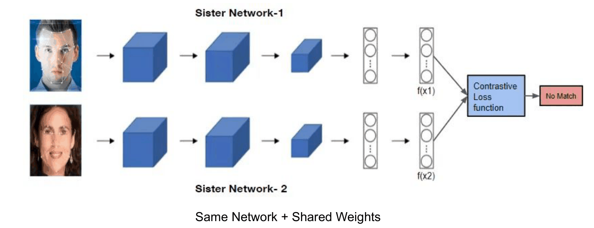
슬라이드 문장 그대로 "Representation Learning = Learning Similarity" (p.5). 과제를 설계하지 말고 similarity 자체를 supervision으로 쓰자는 거야. 비교하려면 두 입력이 같은 공간에 있어야 하니까 weight를 공유하는 Siamese network를 써 (p.8).
Loss 계보: pair에서 InfoNCE까지
- Contrastive lossChopra 2005 · p.11pair 단위. positive는 거리 0으로, negative는 margin ε 밖으로.한계: 이미 margin 밖인 negative는 gradient 0, 상대 순서는 강제 안 함.
- Triplet lossFaceNet 2015 · p.12–13anchor·positive·negative를 상대 비교. "positive가 negative보다 margin만큼 가까워라".한계: N³ 조합 폭발, 대부분 easy triplet → hard negative mining 필요 (p.14).
- Lifted StructuredSong · p.15–16batch 안의 모든 pair 사용. hardest negative를 고르는 max를 log-sum-exp로 부드럽게.Max = sparse gradient, Sum = uniform, LSE = dense & focused (soft hard negative mining).
- N-pair lossSohn, NeurIPS 2016 · p.17–20positive 1개 vs negative N−1개를 동시에. = N-way softmax cross-entropy.
- NCEGutmann 2010 · p.21–22positive vs negative를 data vs noise로 보고 이진 분류 (sigmoid, binary CE).
- InfoNCEOord 2018, CPC · p.23–28N개 중 positive 하나 고르기 (categorical CE). 최적 f ∝ p(x|c)/p(x) (density ratio) → mutual information을 키워.
- Soft-NN lossp.29positive를 여러 개로 (같은 class 이웃 전부). label이 필요해.

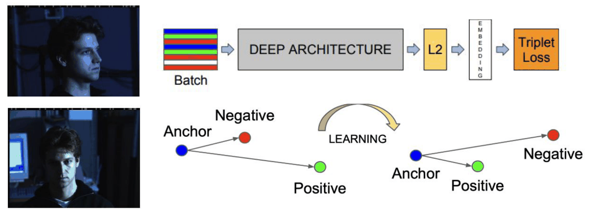
Contrastive vs Triplet: 절대 목표 vs 상대 격차
illustratived_an − d_ap ≥ ε만 요구해서 positive를 한 점에 모을 필요가 없어 (d_ap는 0.5로 고정한 개념 그림).Max vs Sum vs Log-Sum-Exp: negative가 받는 gradient 가중치
illustrativeanchor, positive = 같은 이미지의 다른 augmentation, negative = batch 안의 다른 이미지. L2-normalize + cosine similarity, temperature τ를 넣은 InfoNCE (NT-Xent).
label 있으면같은 class가 positive.

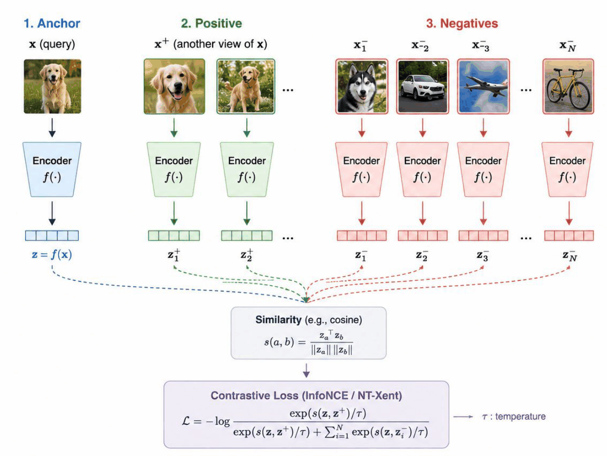
InfoNCE = N개 후보(1 positive + N−1 negative) 중 positive 고르는 softmax 분류
illustrativep_j / (1 − p_pos)가 hard negative(0.70)에 몰려 (τ=0.05 ≈ 0.89, τ=1 ≈ 0.31). 큰 τ는 몫이 고르게 퍼져. (s 값은 개념 그림)최근 논문 3편: views · features · relationships (p.73)
문제손으로 만든 view의 한계. 세게 crop하면 물체가 사라지고(false positive pair), 약하게 하면 두 view가 거의 똑같아(limited diversity).
핵심생성 모델(Stable unCLIP)로 positive view를 만들고, foreground 비율에 따라 noise 양을 조절. 좋은 pair(foreground 비슷, background 다름)에 loss 가중치를 더 줘.

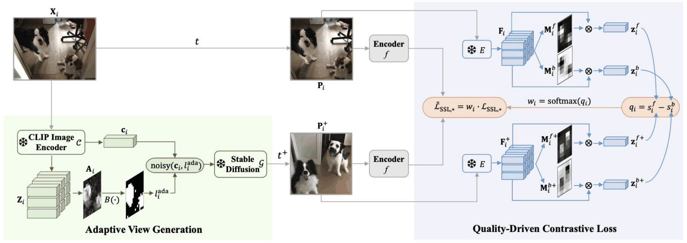
문제feature suppression. 가장 쉬운 구별 feature(예: 색)만 배우면 loss가 이미 만족돼서 shape 같은 정보를 버려.
핵심Train → K-means → 같은 cluster 안에서 negative 선택 → 반복 → feature concat. stage마다 이전 shortcut을 막아 (색 → texture → shape).
차이hard negative mining과 달리 "지금 가까운 것"이 아니라 "이전 stage의 같은 cluster"에서 negative를 뽑아.

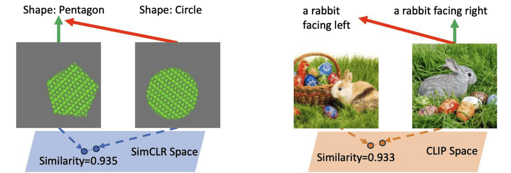

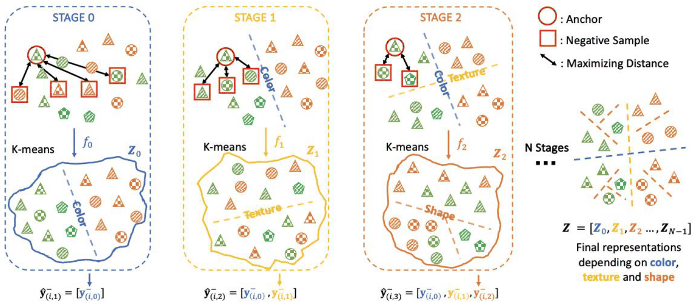
문제target이 binary라서 다른 개, 고양이, 피아노가 똑같이 negative 취급돼.
핵심frozen text encoder로 caption끼리의 similarity를 구해서 그걸 soft target graph로. image similarity graph를 거기에 CE로 맞춰.
차이SSL graph = 두 view만 연결, SupCon = 같은 class(binary), X-CLR = 정도가 다른 similarity.

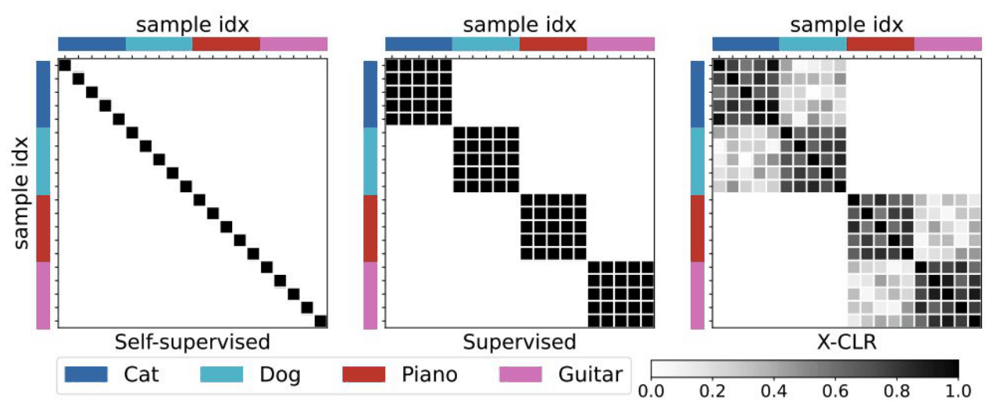
Target graph: X-CLR (soft) vs SupCon vs SSL
illustratives_ij = softmax_j(G_ij/τ_s) (CE의 target 분포, p.67 코드처럼 대각 포함). 아래 SSL(같은 이미지의 다른 view만 1)과 SupCon(같은 class면 1)은 0/1 graph. τ_s를 낮추면 X-CLR이 one-hot(≈ 표준 contrastive)으로, 높이면 평평해져. G는 지어낸 text 유사도 예시(dogA–dogB 0.9, dog–cat 0.6, dog–piano 0.2, cat–piano 0.2).LSE는 "부드러운 max"라서 soft Q-learning·SAC의 soft value V = α·log Σ exp(Q/α)랑 같은 모양이야. max 대신 쓰면 gradient가 모든 항에 퍼지되 큰 항에 더 몰려. 그리고 InfoNCE를 처음 낸 CPC 논문엔 RL 실험(DeepMind Lab auxiliary loss)도 있었어. 나중에 CURL(L05)까지 이어지는 loss가 바로 이거야.
- NCE = binary (sigmoid), InfoNCE = categorical (softmax). 바꿔치기 단골.
- N-pair = 1 positive vs N−1 negatives (1 vs 1 아님).
- Contrastive loss = 절대 목표, Triplet = 상대 순서.
- MCL ≠ hard negative mining. X-CLR에서 τs가 크면 graph가 더 soft.
loss는 정했어. 그럼 실제로 잘 돌리려면 뭐가 필요하고, negative가 꼭 있어야 할까? → L04
셀프 체크
MCQWhich loss solves a binary data-vs-noise classification? (A) InfoNCE (B) NCE (C) N-pair (D) Triplet
(B) NCE. logistic regression, sigmoid + binary CE (p.21–22).
T/FN-pair loss compares one positive with one negative at a time.
False. 1 positive vs N−1 negatives (p.17).
빈칸In X-CLR, the target similarity graph is built from a frozen ______ encoder.
text (caption similarity, p.65–67)
Contrastive Learning II
질문잘 돌리는 재료는 뭐고, negative 없이도 될까?
heavy augmentation (positive 담당), large batch (negative의 양·다양성), hard negative (negative의 질). hard negative는 label 없이는 찾기 어려워서 큰 batch나 memory bank로 확률을 올려.
문제random으로 뽑은 negative에 같은 class(false negative)가 섞여 성능이 크게 떨어져.
핵심label 없이 진짜 negative 분포를 추정: p− = (p − η+p+) / η−. random 분포에서 positive 성분을 빼.
Augmentation 계열
| 방법 | 한 줄 | 짝꿍과 차이 |
|---|---|---|
| AutoAugment CVPR 2019 · p.15 | RL controller로 validation accuracy가 최대인 augmentation policy를 탐색 | fixed policy, 탐색 비쌈 |
| RandAugment 2019 · p.16 | 랜덤 선택 + N(개수), M(전역 강도) 두 개만 | 탐색 공간이 아주 작아짐 |
| PBA ICML 2019 · p.17 | population-based training으로 학습 중에 policy를 진화 | fixed policy 대신 schedule |
| UDA NeurIPS 2020 · p.18 | unlabeled에 augmentation, 원본과 예측이 같도록 KL | consistency regularization (L06에서 다시) |
| Mixup ICLR 2018 · p.19 | 두 이미지 전체를 픽셀 단위 가중합 | global-level |
| CutMix ICCV 2019 · p.20 | 패치를 잘라 붙이고 label은 면적비 | region-level, 진짜 픽셀로 채움 |
| MoCHi NeurIPS 2020 · p.21 | hardest negative끼리, query와 hard negative를 섞어 더 어려운 negative 합성 | pixel이 아니라 feature 공간에서 섞음 |
대표 프레임워크 4개
| SimCLR | BYOL | Barlow Twins | DINO | |
|---|---|---|---|---|
| 출처 | ICML 2020 · p.23–29 | NeurIPS 2020 · p.30–34 | ICML 2021 · p.35–38 | ICCV 2021 · p.39–44 |
| negative | 있음. batch 안 2N−2개 | 없음 | 없음 | 없음 |
| 두 branch | 같은 encoder | online(+predictor) / EMA target | 같은 encoder | student / EMA teacher |
| loss | InfoNCE (NT-Xent) | normalized MSE | cross-correlation → identity | softmax 분포 간 CE |
| collapse 방지 | negative가 밀어냄 | predictor + EMA + stop-gradient | off-diagonal → 0 | teacher centering + sharpening |
| 한 줄 | 두 view 당기고 나머지 밀기, 큰 batch 필수 | negative 없이 EMA target을 예측 | feature 차원끼리 상관 = I | 학생이 EMA 선생의 분포를 따라감 |

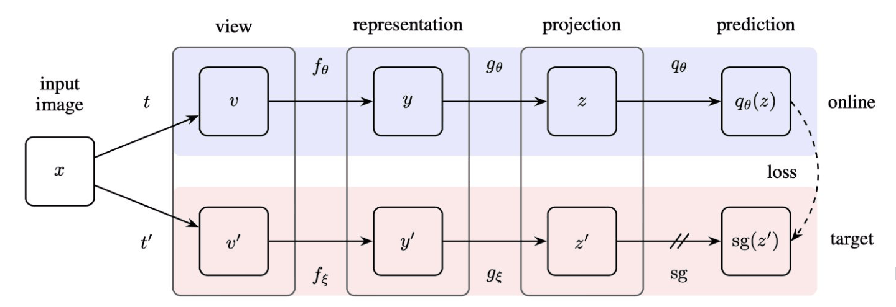
sg(stop-gradient)로 gradient가 끊겨. target 파라미터 ξ는 학습이 아니라 θ의 EMA로만 갱신돼. negative는 없어. EMA 식은 ξ ← τξ + (1−τ)θ인데, 여기서 τ는 temperature가 아니라 EMA 계수야.L04 p.30
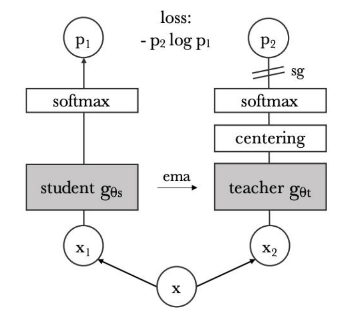
sg도 teacher 쪽에만 붙어. student → teacher는 ema 화살표. loss는 teacher 분포 p2와 student 분포 p1의 cross-entropy (-p2 log p1).L04 p.40 (왼쪽 도식)SimCLR · BYOL · Barlow Twins · DINO를 같은 문법으로
DINO teacher: centering은 한 차원 독점을, sharpening은 uniform을 막아
illustrativesoftmax((t − C) / τ_t) (L04 p.40). logit t는 개념용 값이야. centering off면 계속 큰 한 차원(k=3)이 독점해서 one-hot으로 collapse. sharpening off(τ_t를 크게)이면 분포가 평평해져 uniform collapse. 둘이 서로 반대 방향으로 막아주니까 같이 써야 해. 각 막대 위가 확률값이야. 이 collapse 해석(centering은 한 차원 독점, sharpening은 uniform을 막음)은 슬라이드 밖 논문 보충이고, 슬라이드엔 # center + sharpen 주석뿐이야. logit·τ 값은 개념용. (개념 그림)
N장 → view 2N개. projection head 출력 z = g(h)에서 loss를 걸고, 끝나면 g는 버리고 h를 써. memory bank 없이 batch 안 negative만 쓰니까 batch가 커야 해 (TPU).

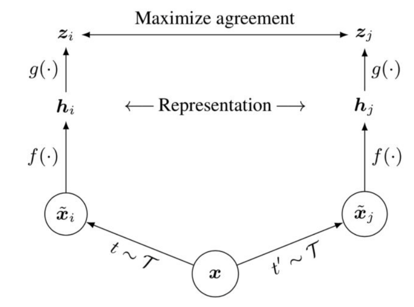
t, t'을 두 번 → encoder f로 representation h → projection head g로 z → 두 z의 agreement를 contrastive loss로 최대화. loss는 h가 아니라 z 공간에서 걸려.L04 p.23–24상관행렬은 batch 방향으로 계산한 D×D. 대각선 → 1 (invariance), 비대각 → 0 (redundancy reduction). batch size에 robust.

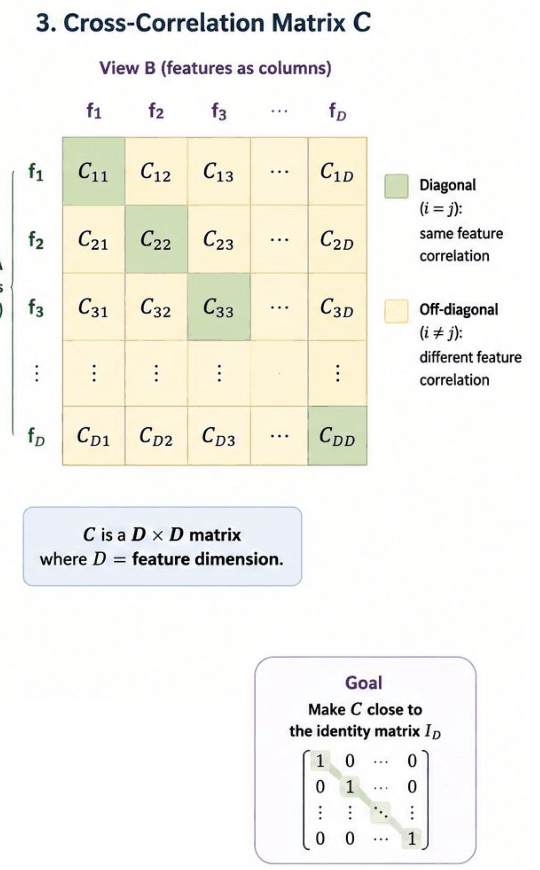
Barlow Twins: D×D cross-correlation이 identity가 되어 가는 과정
illustrative핵심Llama-2가 caption을 만들고 text-to-image 모델이 caption당 4장 생성. 같은 caption에서 나온 이미지들 = positive set (multi-positive loss). 진짜 이미지 없이 학습.
차이SimCLR은 image identity를 보존, SynCLR은 caption 수준 의미를 보존.

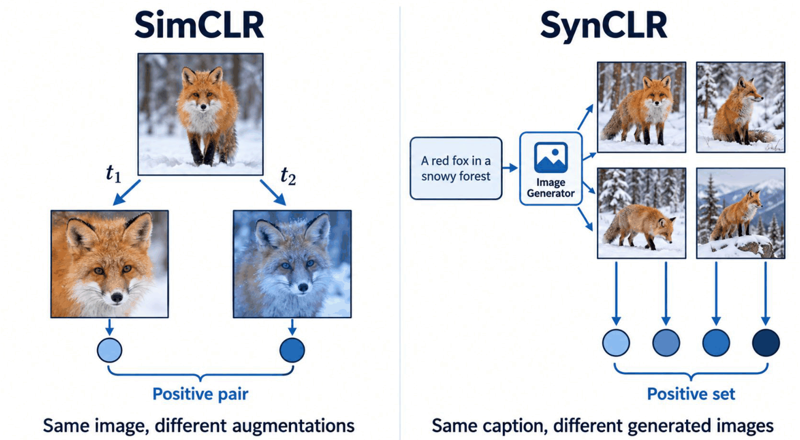
핵심DINO + iBOT(patch-level masked) + KoLeo(feature 퍼뜨리기) + curated data(LVD-142M) + scaling(ViT-g를 작은 모델로 distill).
차이새 loss 하나가 아니라 통합 시스템. 이미지만으로(label·caption 없이) 학습한 범용 frozen feature.

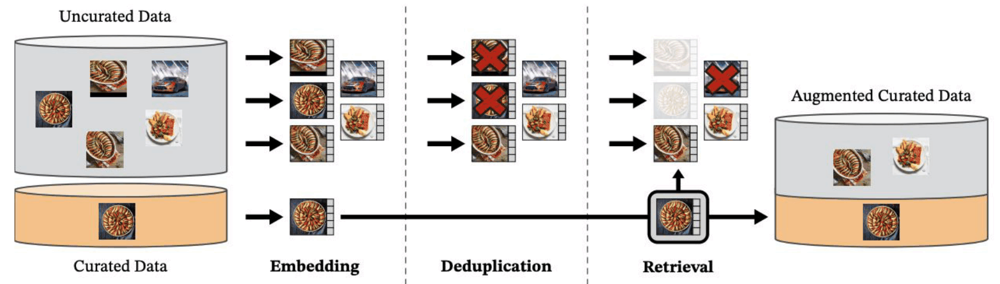
문제오래 학습하면 global feature는 좋아지는데 dense(patch) feature가 망가져.
핵심patch feature가 깨끗하던 예전 checkpoint의 patch similarity 구조(Gram matrix XX⊤)를 유지하게 붙잡아. feature 자체가 아니라 유사도 구조를 맞춰.

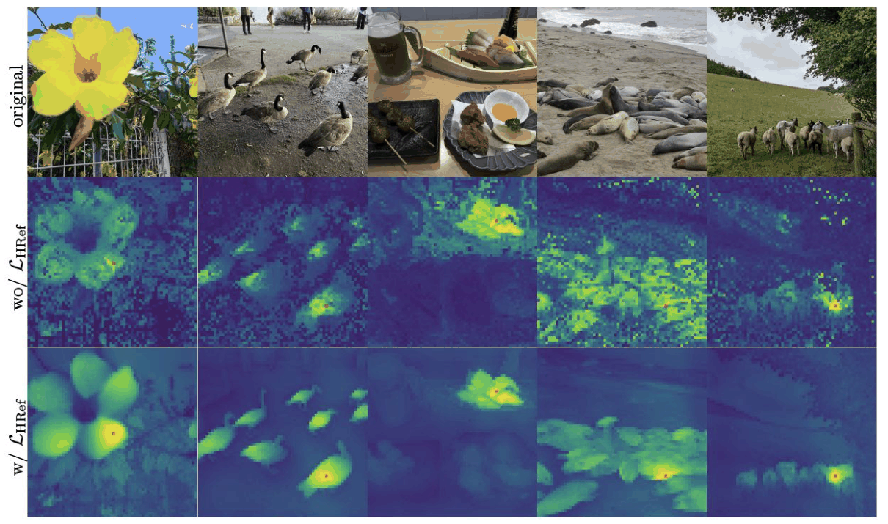
BYOL의 "bootstrap"은 TD learning의 bootstrap과 같은 뜻이야. 정답 대신 천천히 움직이는 target network의 출력을 target으로 써. DQN에서 target을 천천히 움직여야 안정적인 것과 같은 직관이고, stop-gradient도 semi-gradient TD랑 같은 이유. AutoAugment는 아예 RL(controller, reward = validation accuracy)로 augmentation을 찾아. SynCLR·GenView는 diffusion/text-to-image 생성 모델을 view 생성기로 써. 네 쪽 generative model이 여기선 데이터 공장이야.
- BYOL: negative 없음, loss는 MSE. DINO: loss는 CE, centering은 teacher에만.
- SimCLR: negative 2N−2개, 학습 후 g를 버림 (f를 버리는 게 아님).
- Barlow Twins: sample끼리가 아니라 feature 차원끼리 비교.
- SynCLR positive = 같은 caption. DINOv2 = 이미지만 (caption 안 씀).
SimCLR은 negative를 batch에서만 가져와서 batch가 커야 해. batch를 안 키우고 negative를 많이 구할 순 없을까? negative 말고 cluster·언어·label로 supervision을 줄 순 없을까? → L05
셀프 체크
T/FBYOL needs many negative samples, so it requires a large batch size.
False. negative 없이 EMA target을 예측해 (p.30–34).
빈칸Barlow Twins pushes the cross-correlation matrix of the two views toward the ______ matrix.
identity (p.35–38)
MCQWhich method trains a student to match an EMA teacher's softmax distribution with cross-entropy? (A) BYOL (B) DINO (C) Barlow Twins (D) SimCLR
(B) DINO (p.39–44). BYOL은 MSE로 feature를 맞춰.
Contrastive Learning III
질문negative를 싸게 많이 구하려면? negative 말고 다른 supervision은?
negative 창고 짓기
예전에 계산한 embedding을 저장해서 negative로 재활용. mini-batch negative는 적지만 fresh, memory bank negative는 많지만 조금 stale.
핵심이미지 한 장 = class 하나. classifier weight 대신 bank에 저장한 feature를 쓰는 non-parametric softmax, NCE로 근사.
한계bank feature가 옛날 encoder로 만든 거라 stale해.

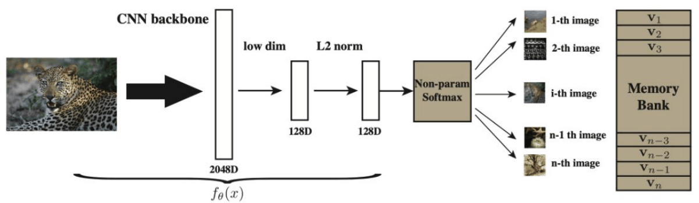
질문"Can we keep a large dictionary while reducing feature staleness?" (p.9)
핵심bank 대신 FIFO queue + key를 만드는 momentum encoder θk ← mθk + (1−m)θq. 크고(large) 일관된(consistent) dictionary.
차이gradient는 query encoder로만 흘러. key 개수가 batch size랑 분리돼.

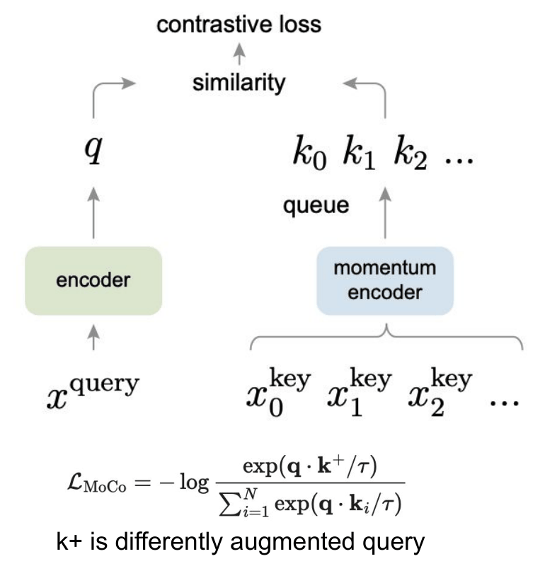
momentum encoder가 key를 일관되게 만드는 이유
illustrative| p.14 비교 | End-to-end (SimCLR) | Memory bank | MoCo |
|---|---|---|---|
| key 만드는 쪽 | 현재 encoder (backprop) | 저장된 feature | momentum encoder |
| negative 출처 | mini-batch | memory bank | FIFO queue |
| dictionary | 작음 (batch에 묶임) | 큼 | 큼 |
| key 상태 | fresh | stale | consistent |

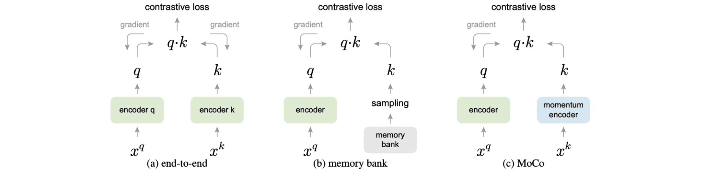
key와 negative는 어디서 오나: End-to-end vs Memory bank vs MoCo
f_q(accent 실선)로 만들고, 다른 건 key와 negative의 출처야. 맨 앞 MoCo는 점선 박스 f_k = EMA로만 갱신되는 momentum encoder가 key를 만들고, 그 key를 FIFO queue에 넣고 빼서 크면서도 consistent해. 그 아래 End-to-end는 현재 encoder라 fresh하지만 negative가 batch 크기에 묶이고, Memory bank는 저장된 값을 재활용해서 크지만 색이 제각각인 것처럼 과거 여러 encoder가 쓴 값이라 stale해. (p.14 표 순서는 End-to-end, Memory bank, MoCo인데 여기선 MoCo를 맨 앞에 뒀어.) 왼쪽 위 // sg는 key로 gradient가 안 간다는 표시고, key는 loss로도 가고 queue 오른쪽 끝(newest)으로 enqueue도 돼. End-to-end는 p.13이 encoder를 q/k 둘로 그리고 p.14는 "current encoder"라 적어서 "같거나 별도"로 썼어. (L05 p.13–14, p.11–12)MoCo + SimCLR의 레시피 (MLP projection head, 더 센 augmentation). 새 구조가 아니야. batch 256으로 SimCLR(8192)을 이김.
문제pixel 관측으로 하는 RL은 sample-inefficient해.
핵심replay buffer의 observation에 MoCo식 contrastive (random crop pair, query + momentum key encoder)를 붙이고, 그 representation 위에서 RL을 동시에 학습.

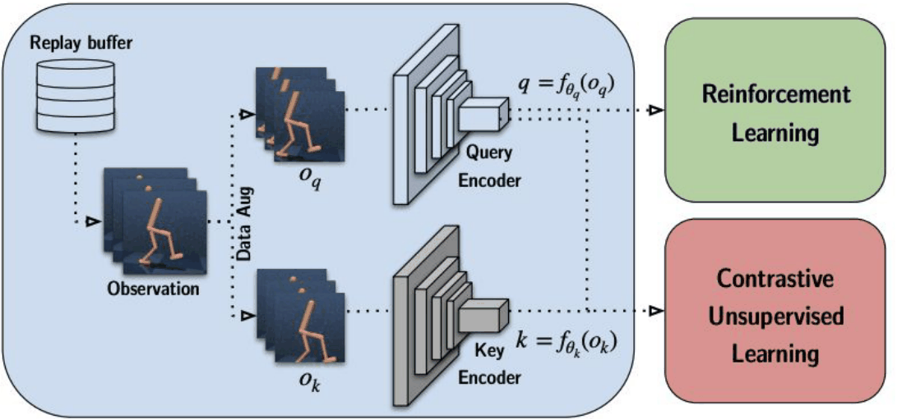
negative 말고 다른 신호
핵심현재 feature를 k-means로 묶고 cluster 번호를 pseudo label 삼아 분류 학습, 반복. "Alternate between clustering and classification."
차이positive/negative pair를 아예 안 만들어. clustering은 offline (dataset 전체).

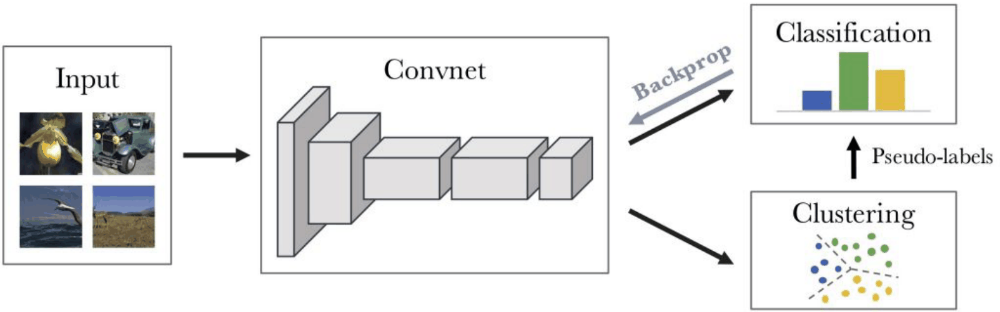
핵심학습 가능한 prototype K개로 view마다 code(cluster 배정)를 online으로 계산하고, 한 view의 code를 다른 view로 예측 (swapped prediction).
차이Feature↔Feature가 아니라 Feature↔Prototype. 명시적 negative 없음, offline clustering 없음.

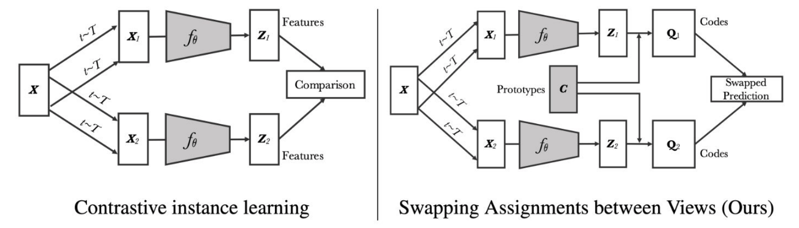
SwAV: 한 view의 code를 다른 view의 feature로 예측해
핵심image encoder와 text encoder를 같이 학습해서 짝지어진 (image, caption)을 shared space에 정렬. N×N 행렬에서 양방향(symmetric) contrastive loss.
추론"a photo of a {class}" prompt들과 비교해서 zero-shot 분류.
포인트contrastive가 caption 예측보다 약 4× data-efficient (p.36).

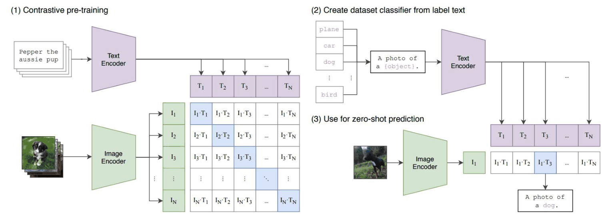
A photo of a {object}.로 인코딩해 두고 이미지와 가장 비슷한 text를 고르면 학습 없이 zero-shot 분류.L05 p.33CLIP의 n×n 행렬: row와 column을 각각 softmax하는 symmetric loss
illustrativelabels = np.arange(n))이고 loss는 두 방향 CE의 평균이야. 칸을 눌러도 선택돼. 슬라이드 코드는 loss_i(axis=0), loss_t(axis=1)로 쓰는데 axis가 어느 방향인지는 정의가 없어서 해석이 갈려. 시험엔 '두 방향 CE 평균 = symmetric'만 확실히 기억해. (N=5 예시) 숫자는 지어낸 개념 그림이야. (L05 p.33, p.35)핵심label을 써서 같은 class 전부를 positive로. positive마다 InfoNCE를 계산해서 평균.
결과CE보다 정확도는 조금 나은 정도지만, 더 robust하고(ImageNet-C) hyperparameter에 덜 민감해.

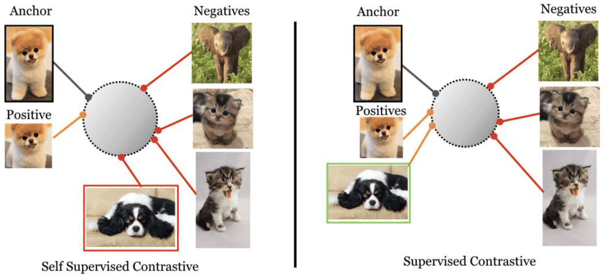
질문"Can the memory bank provide more than negatives?"
핵심NNCLR은 support set의 nearest neighbor 하나를 positive로. All4One은 이웃 K개를 작은 Transformer(self-attention)로 centroid 하나로 요약. loss 3개 = Neighbor · Centroid · Feature contrast (Barlow Twins식).

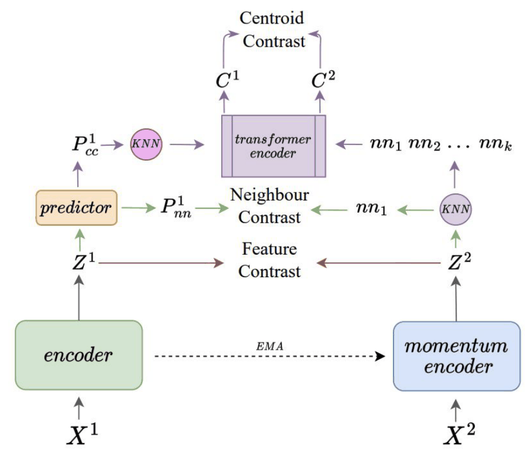
문제fine-grained data에선 강한 augmentation이 얕은 stage feature를 망가뜨려.
핵심SPA = 얕은 stage엔 약한 aug, 깊은 stage엔 강한 aug. PHP = prototype으로 part feature를 뽑아서 whole feature와 같이 contrast.
문제SupCon에서 사람의 label 실수는 대부분 false positive가 되고, 그게 similarity 높은 easy positive처럼 보여.
핵심similarity가 높은 positive는 가중치를 낮게 → hard positive를 강조.
CURL은 이 수업에 직접 나오는 RL 논문이야 (SAC 위에 contrastive auxiliary loss). MoCo의 m = 0.999 momentum update는 SAC target network의 soft update랑 같은 식이고, queue는 "조금 오래됐지만 천천히 변하는 encoder로 만든 key라서 일관됨"이라는 점에서 off-policy replay buffer의 staleness trade-off랑 닮았어.
- MoCo:
k.detach()→ gradient는 query encoder로만. key encoder는 momentum으로만 갱신. - MoCo
labels = zeros(N)↔ CLIPlabels = np.arange(n). 바꿔치기 단골. - MoCo v2 = 새 architecture가 아니라 MLP head + 센 aug.
- DeepCluster = offline, SwAV = online. SwAV는 명시적 negative 없음.
- SCL-RHE: similarity 높은 positive → 가중치 낮게.
여기까지는 label이 아예 없거나(self-supervised) 다 있는(SupCon) 경우야. 현실은 label 조금 + unlabeled 많이. → L06
셀프 체크
빈칸In MoCo, the key encoder is updated by a ______ update, not by back-propagation.
momentum (EMA, p.11–12)
T/FIn the CLIP pseudo code, labels = np.zeros(n).
False. np.arange(n) (대각선). zeros(N)은 MoCo (p.35, p.12).
MCQSwAV compares: (A) Feature ↔ Feature (B) Feature ↔ Prototype (C) Image ↔ Text (D) Query ↔ Queue
(B) (p.30)
Semi-Supervised Learning I
질문label이 조금 있을 때 unlabeled를 어떻게 써먹나? ① consistency
(1) pre-training + fine-tuning, (2) active learning (다음에 label 달 샘플 고르기), (3) pre-training + dataset auto-generation, (4) semi-supervised = labeled와 unlabeled를 같이 학습. (1)은 2단계 순차라는 게 차이.
L = Ls + μ(t)·Lu, μ(t)는 시간이 갈수록 커져 (초반 예측은 못 믿으니까). 핵심 질문은 Lu를 어떻게 만드냐: consistency (L06) 또는 pseudo label (L07).

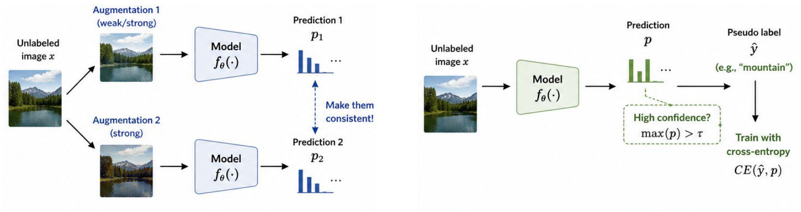
μ(t): unsupervised 항 가중치는 시간이 갈수록 커진다
illustrativeH1 Smoothness (가까우면 예측도 비슷) · H2 Cluster (같은 cluster = 같은 label) · H3 Low-density separation (boundary는 밀도 낮은 곳) · H4 Manifold (data는 저차원 manifold 위).

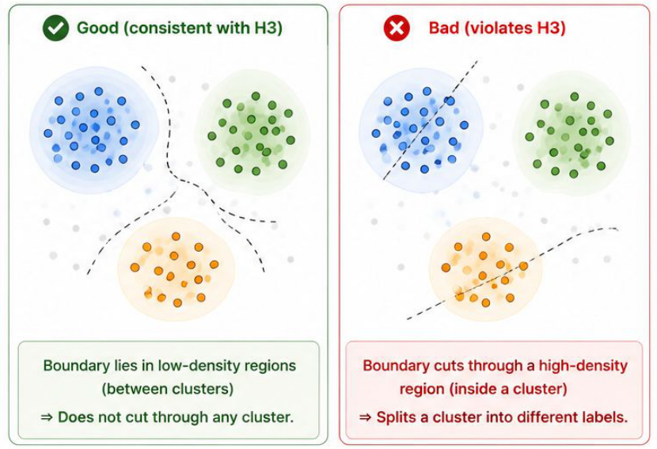
Low-density separation: boundary는 unlabeled가 비어 있는 곳으로
illustrativeLu = D(f(x), f(A(x))). perturbation은 data augmentation이나 dropout 같은 model stochasticity에서 와. H1을 loss로 만든 거야.
target을 어디서 얻나: Π → TE → Mean Teacher
| Π-model p.17–18 · code p.18 | Temporal Ensembling Laine, ICLR 2017 · p.19–22 · code p.20 | Mean Teacher Tarvainen · p.23–29 | |
|---|---|---|---|
| target | 같은 net에 다른 noise로 한 번 더 forward | 그 샘플의 과거 예측 EMA | EMA teacher의 예측 |
| EMA 대상 | 없음 | predictions (N×C 저장) | weights |
| 갱신 시점 | 매 step | epoch 끝 + bias correction | 매 iteration |
| forward | 2회 | 1회 | student 1 + teacher 1 |
| 약점 | 비용 2배 | 메모리, 느린 갱신, scale 어려움 | teacher가 student를 너무 닮아감 (뒤에서) |

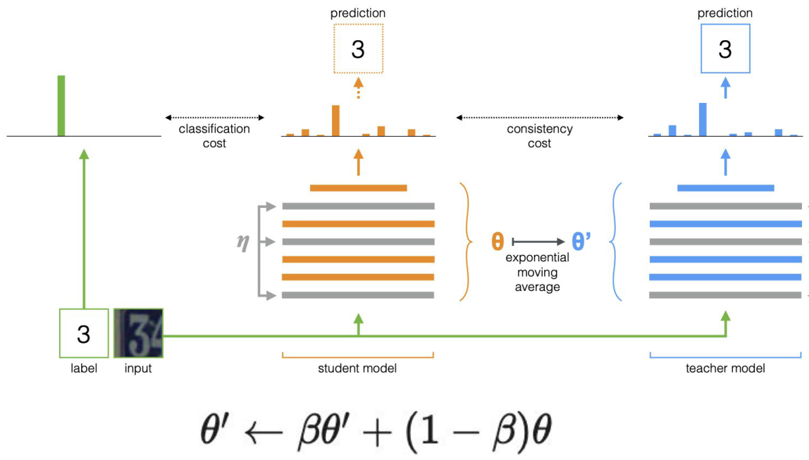
Π-model vs Temporal Ensembling vs Mean Teacher: target z̃는 어디서 오나
CE(labeled) + μ(t)·MSE(z, z̃) (Π 코드에선 μ(t)가 w(t))이고, 다른 건 z̃의 출처 하나야. Π는 같은 네트워크를 noise만 바꿔 한 번 더 forward(2회), TE는 forward 1회 + 샘플별 prediction 메모리 Z(N×C)를 epoch 끝에 EMA (슬라이드 caption: Z·z̃ 갱신은 minibatch 루프 안에서 해도 됨), MT는 weight를 매 iteration EMA한 teacher의 예측. 점선 박스 = gradient 없이 EMA로만 갱신. (L06 p.17–25)Temporal Ensembling의 bias correction: 왜 1−α^t로 나누나
illustrativeZ_t = (1−α^t)·0.8로 초반엔 한참 낮아 (갈색 선). 1−α^t로 나누면 epoch 1부터 정확히 0.8 (초록). α가 클수록 bias가 오래 가서 보정이 더 중요해. (L06 p.20)

Mean Teacher 실전 팁 (p.23–29): input augmentation 필수, β는 초반 0.99 → 후반 0.999, consistency loss는 MSE가 KL보다 나아.
perturbation을 어떻게 주나
- Noisy samples as targetsp.30–31같은 모델로, 원본과 strong augmentation 버전의 예측을 같게.Π-model은 네트워크 안의 noise, 이건 입력 augmentation.
- Adversarial TrainingGoodfellow, ICLR 2015 · p.32–33모델이 제일 헷갈리는 방향(worst-case)으로 noise를 넣고도 정답(GT)을 맞히게. FGSM r ≈ ε·sign(g).supervised, 목적은 robustness.
- VATMiyato, TPAMI 2018 · p.34–35GT 대신 모델 자신의 예측을 target으로 ("virtual"). unlabeled에도 쓸 수 있어.목적은 local smoothness. random 방향(RPT)이 아니라 가장 adversarial한 방향만.
- ICTVerma · p.36–38unlabeled 두 장을 MixUp. student의 섞인 입력 예측 = Mean Teacher 예측을 섞은 것. "mixed inputs → mixed predictions".MixUp 샘플은 boundary 근처라 low-density separation과 맞아.
- UDAXie, NeurIPS 2020 · p.39–42작은 noise 대신 label을 보존하는 센 의미적 augmentation(RandAugment). 이것만으로 VAT·ICT를 이겨."How we perturb the input matters more than simply adding perturbations."

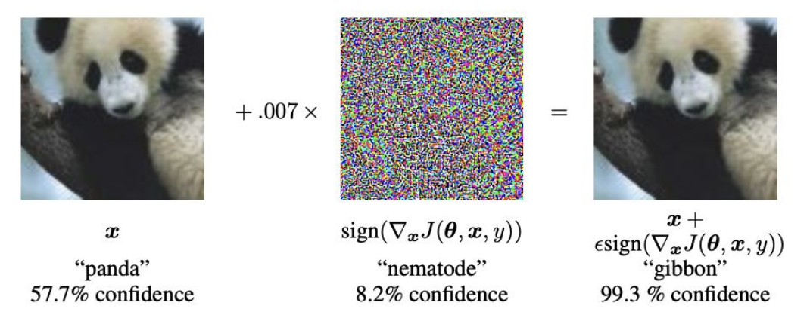
Perturbation 방향: random(RPT) vs adversarial(AT/VAT)
illustrative
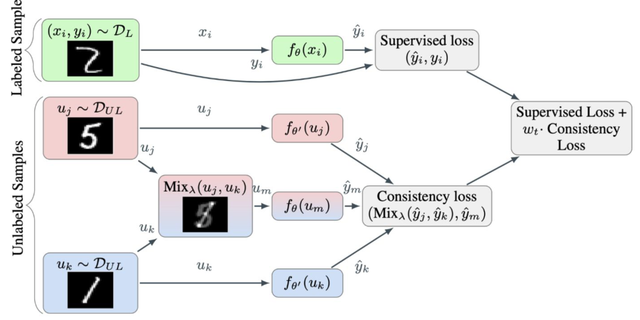
teacher 고치기
문제perturbation을 세게 주고 싶은데, teacher가 틀리면 student가 그 오류를 그대로 배워.
핵심mean teacher 2개의 ensemble로 target을 만들고 (epoch마다 하나만 갱신), student엔 센 perturbation (input CutMix, feature T-VAT), loss는 MSE 대신 더 엄격한 Conf-CE.
포인트T-VAT은 teacher가 adversarial 방향을 찾아. CutMix는 teacher 예측 이후에 적용.

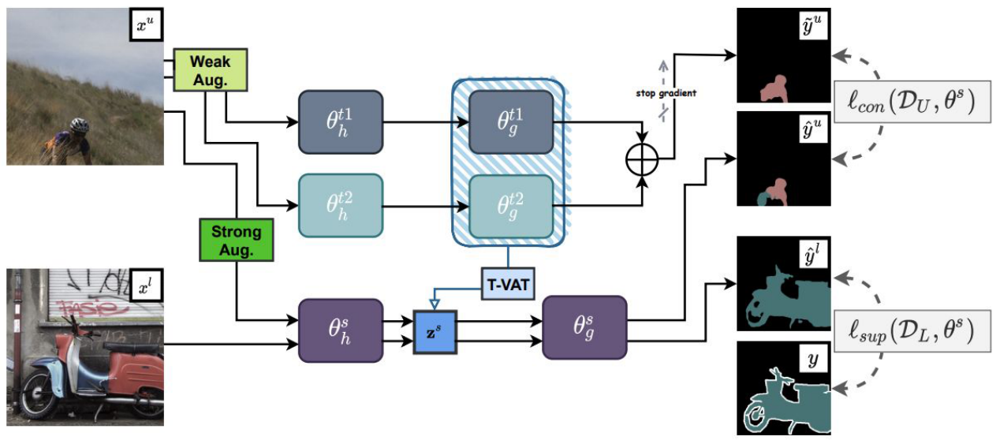
문제EMA teacher가 student를 점점 닮아가서(coupling) 새 정보가 없고 오류도 물려받아.
핵심임시 teacher 2개가 epoch마다 교대. active teacher만 target을 만들고 갱신돼. ensemble보다 switching이 나아.
문장"A teacher should be stable, but it should not become identical to the student."

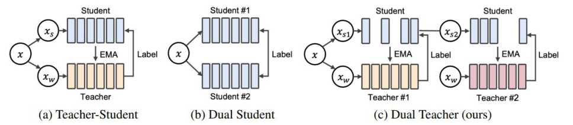
핵심ViT 구조에 맞춘 perturbation 3단: Input = PatchShuffle, Feature = PASA, Output = NCR. 단일 효과는 PatchShuffle이 제일 커.

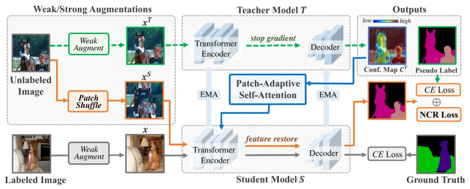
feature restore 화살표는 decoder 앞에서 shuffle된 patch 순서를 되돌리는 거야. Patch-Adaptive Self-Attention(파란 박스)은 teacher patch confidence로 attention mask를 만드는 feature-level perturbation, output 쪽은 CE + NCR(non-pseudo-label class 분포 맞추기).L06 p.69Mean Teacher의 θ′ ← βθ′ + (1−β)θ는 target network soft update 그대로고, β를 0.99 → 0.999로 키우는 것도 "초반엔 빨리 따라가고 나중엔 안정적으로"라는 같은 직관이야. consistency regularization은 DrQ·RAD가 pixel RL에서 하는 것(augmentation을 줘도 Q·policy가 같게)과 같은 발상이고, sim2real의 domain randomization도 "겉모습이 바뀌어도 행동은 같아야 한다"는 점에서 친척이야. Dual Teacher의 coupling은 "자기 자신으로 자기 target을 만들 때 생기는 bias"라서, Double DQN이 estimator를 분리하는 이유랑 통해.
- TE = prediction EMA, epoch 끝. Mean Teacher = weight EMA, 매 iteration.
- μ(t)는 증가. H3 boundary는 low-density, H4는 low-dimensional manifold.
- AT = GT label, VAT = 모델 예측 ("virtual").
- Mean Teacher: teacher는 EMA로만 갱신 (backprop 없음), MSE > KL.
consistency는 "두 예측을 같게"야. 더 직접적으로 "confident한 예측을 아예 정답으로 쓰자"는 게 pseudo labeling. → L07
셀프 체크
빈칸Temporal Ensembling keeps an EMA of ______, while Mean Teacher keeps an EMA of ______.
predictions / weights (p.19–25)
T/FUnder the low-density separation assumption, decision boundaries should pass through high-density regions.
False. low-density regions (p.11–14).
MCQ"Virtual" in VAT means: (A) synthetic images (B) the model's own predictions replace ground-truth labels (C) a virtual teacher network (D) random perturbations
(B) (p.34–35)
Semi-Supervised Learning II
질문② confident한 예측을 정답으로 쓰자. 근데 틀리면?
기본기
- Pseudo-Label & Entropy MinimizationLee, ICML 2013 · p.4–9confident한 예측을 hard label로 바꿔서 labeled와 같이 학습. pseudo labeling = entropy regularization의 hard-label 근사.entropy를 줄이면 boundary가 low-density로 이동.
- Label PropagationIscen, CVPR 2019 · p.10–14 · code p.11feature 공간에 kNN graph를 만들고 labeled에서 unlabeled로 label을 퍼뜨려(diffusion). 자기 softmax가 아니라 이웃 관계에서 label이 나와.confidence-based → similarity-based. 대신 graph 비용이 크고 feature 질에 의존.
- Self-training · Noisy StudentXie, CVPR 2020 · p.15–19teacher가 pseudo label → student 학습 → student가 다음 teacher, 반복. student는 teacher와 같거나 더 크고, student에만 noise (RandAugment, Dropout, Stochastic Depth).

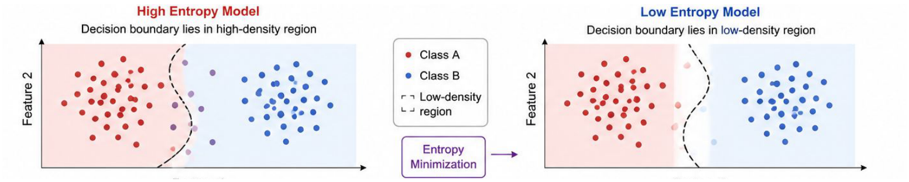

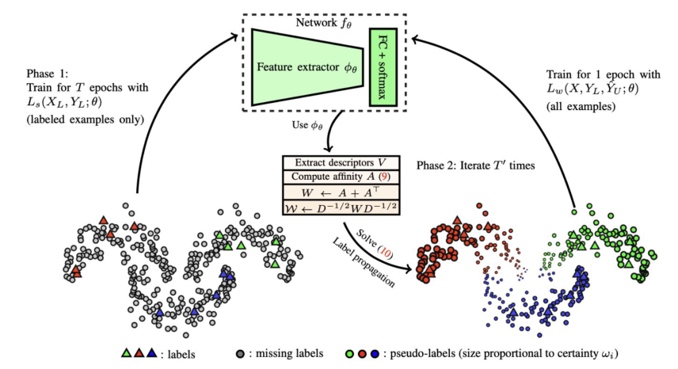

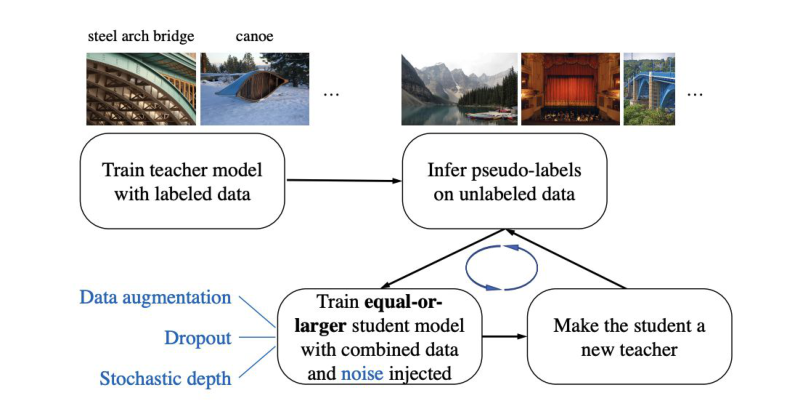
틀린 pseudo label 다루기
문제불완전한 teacher의 틀린 label을 student가 따라 하면서 오류가 쌓여.
핵심틀린 label을 외우기 어렵게 regularize: soft label MixUp, labeled data oversampling (mini-batch마다 최소 개수), strong augmentation, dropout.
핵심teacher를 고정하지 말고 teacher를 학습. bi-level: student는 teacher의 pseudo label로 학습하고, teacher는 그 student의 labeled data loss가 낮아지는 방향으로 갱신.
차이Arazo는 student를 regularize, Meta PL은 student의 feedback으로 teacher를 고쳐.

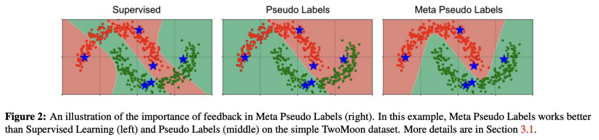
둘 다 쓰기: MixMatch → ReMixMatch → FixMatch
pseudo labeling + consistency를 합치는 거야 (p.28–29). 한 view로 target을 만들고 다른 view가 그걸 맞히게.
| MixMatch NeurIPS 2019 · p.30–35 | ReMixMatch 2020 · p.36–41 | FixMatch p.42–48 | |
|---|---|---|---|
| pseudo label | K개 aug 예측 평균 → sharpen | weak anchor 예측 + distribution alignment → sharpen | weak aug 예측, max ≥ τ면 one-hot |
| 학습하는 입력 | MixUp한 샘플 | 여러 strong aug (augmentation anchoring) | strong aug |
| unlabeled loss | L2 | (슬라이드 강조 X) | CE |
| 새로 넣은 것 | 여러 아이디어를 하나로 통합 | DA, AA, rotation loss | 뺌. sharpening·MixUp 없음 |


Sharpening(MixMatch) vs confidence threshold(FixMatch)
illustrativep_i^{1/T} / Σ_j p_j^{1/T}라서 T가 작을수록 entropy가 줄지만 soft한 분포고 모든 샘플이 loss에 들어가 (T=1이면 그대로, T→0이면 one-hot에 가까워져). Threshold는 max가 τ 넘는 샘플만 hard one-hot으로 쓰고 나머지는 버려. FixMatch는 sharpening 없이 threshold만으로 더 좋았어. 예측값은 개념용 가짜 값. (L07 p.32, p.42–48)FixMatch 한 줄: "Predict on an easy example, learn from a difficult one." threshold가 sharpening보다 효과적이야.
문제labeled data에 noisy label이 섞여 있어.
핵심샘플별 training loss에 2-component GMM → loss 낮으면 clean, 높으면 noisy. noisy는 label만 버리고 unlabeled로 써서 MixMatch. 네트워크 2개가 서로의 분할을 써 (co-divide).
차이새 학습 알고리즘이 아니라 MixMatch용 labeled/unlabeled를 만드는 방법 + co-refinement + co-guessing.

DivideMix co-divide: loss의 2-GMM으로 clean / noisy 나누기
illustrativew = 낮은 loss 성분에 속할 확률이고, w ≥ τ면 labeled 𝒳, 아니면 label만 버리고 unlabeled 𝒰로 MixMatch에 넣어. net A의 GMM 분할로 net B를 학습, 반대도 마찬가지 (co-divide, p.54 line 4–5). 단, 그림에서 w는 clean 성분 평균보다 loss가 낮은 구간을 1로 고정해서 그렸어. (L07 p.49–54)Zophpre-training의 이득은 augmentation이 세지고 label이 많아질수록 줄어. self-training은 그래도 효과가 있어. 둘은 보완 관계.
SimCLRv2(1) self-supervised pre-training (큰 모델) → (2) supervised fine-tuning → (3) unlabeled로 self-training / distillation (soft label).

threshold 3부작 (p.105)
- FreeMatchWang · p.64–75FixMatch의 고정 τ 대신 self-adaptive threshold. 전역 threshold = unlabeled 평균 confidence의 EMA (1/C에서 시작해서 올라감), class별로 조절. SAF로 예측이 몇 class에 몰리는 걸 막아.어떤 pseudo label을 고를까?
- AllMatchWu, IJCAI 2024 · p.76–91버리던 low-confidence 샘플도 top-5 정확도는 거의 100%. class별 threshold는 classifier weight norm으로, BCC로 후보 class vs negative class 이진 구분을 strong view에도 강제해서 모든 샘플을 써.안 고른 샘플은 어떻게 할까?
- IFMatchWu & Cui, ECCV 2024 · p.92–104통과한 샘플이 다 같은 strong aug를 받는데, 쉬운 샘플은 loss가 거의 0이야. image perturbation에 feature perturbation을 더하고, strong aug 뒤에도 confident한 쉬운 샘플엔 추가 perturbation (CBI). plug-in.모든 pseudo label이 같은 perturbation을 받아야 할까?


고정 τ(FixMatch) vs self-adaptive τ_t(FreeMatch)
illustrativeτ₀ = 1/C에서 시작해 평균 confidence의 EMA를 따라 올라가니까 초반에도 통과 비율이 높아. FreeMatch의 통과 비율이 뒤로 갈수록 줄어드는 건 나빠진 게 아니라, 모델이 confident해지면서 τ_t도 올라가 더 selective해지는 거야 (양보다 질). 곡선 모양은 개념 그림이고 실제 수치가 아냐. class별 보정(local threshold)은 생략. (L07 p.64–75)pseudo labeling은 자기 예측으로 자기 target을 만드는 bootstrapping이야. confirmation bias는 Q-learning에서 자기 추정치로 target을 만들 때 오차가 쌓이는 문제랑 같은 모양이고, 해법도 닮았어. DivideMix가 두 network의 분할을 서로 바꿔 쓰는 건 Double DQN·TD3 twin critic처럼 "다른 estimator로 내 target을 견제"하는 발상이야. Meta Pseudo Labels는 student가 labeled data에서 얼마나 좋아졌는지가 teacher한테 reward처럼 돌아가는 구조고, FixMatch의 weak → strong은 DrQ처럼 "쉬운 view에서 target, 어려운 view에서 학습", FreeMatch의 올라가는 threshold는 curriculum이야.
- Noisy Student: noise는 student에만, student ≥ teacher.
- MixMatch: 평균 먼저, 그다음 sharpen. unlabeled는 L2.
- FixMatch: sharpening·MixUp 없음. weak에서 label, strong에서 학습.
- DivideMix: noisy 샘플은 label만 버림. 분할은 상대 network가 해줌. loss 낮으면 clean. (slide엔 ICML 2020인데 실제론 ICLR 2020 → 시험은 slide 표기로)
- SimCLRv2 순서: pre-train → fine-tune → distill.
셀프 체크
빈칸FixMatch: the pseudo label comes from a ______-augmented image, and the model is trained to predict it on a ______-augmented image.
weakly / strongly (p.42–48)
T/FIn DivideMix, each network divides its own training data into clean and noisy sets for itself.
False. θ(1)의 loss로 만든 분할은 θ(2)가 써 (co-divide, p.51–54).
빈칸FreeMatch's global threshold starts at ______ and rises as the model becomes more confident.
1/C (C = class 수, p.64–75)
공통 패턴: 7강에 계속 나오는 부품
논문은 30개가 넘지만 부품은 몇 개 안 돼. 이 표 두 개가 잡히면 "이건 어느 방법?" 문제가 거의 풀려.
EMA: 뭘 천천히 따라가게 하나
| 방법 | EMA 대상 | 식 (슬라이드 기호) | 언제 |
|---|---|---|---|
| MoCo L05 p.12 | key encoder weights | f_k = m*f_k + (1-m)*f_q | 매 step |
| BYOL L04 p.30 | target weights ξ | ξ ← τξ + (1−τ)θ | 매 step |
| DINO L04 p.40 | teacher weights + center C | gt = l*gt + (1-l)*gs / C = m*C + (1-m)*mean | 매 step |
| Mean Teacher L06 p.23–25 | teacher weights | θ′ ← βθ′ + (1−β)θ | 매 iteration |
| Temporal Ensembling L06 p.20 | predictions (weight 아님) | Z ← αZ + (1−α)z, z̃ = Z/(1−αt) | epoch 끝 |
| FreeMatch L07 p.64–75 | 평균 confidence → threshold | 1/C에서 시작 | 매 step |
EMA의 m이 클수록 teacher가 얼마나 느려지나
illustrative같은 식 모양이지만 weight가 아니라 sample별 prediction의 EMA야 (Z ← αZ + (1−α)z). 매 step이 아니라 epoch 끝에 갱신하고, 처음 epoch의 편향은 z̃ = Z/(1−αt)로 보정해. 위 곡선은 weight EMA에 해당 (L06 p.20).
1 − mt. 63%에 닿는 데 걸리는 시간이 대략 1/(1−m) step이라, m이 1에 가까울수록 teacher는 느리고 안정적이야. Mean Teacher는 처음엔 β = 0.99로 빨리 따라가다 student가 수렴하면 β = 0.999로 teacher를 더 안정적으로 만들어 (L06 p.28). MoCo의 key encoder도 같은 weight EMA인데 m 값은 슬라이드에 안 나와서 표시 안 했어 (L05 p.12). 개념 그림.방향은 항상 느린 쪽 ← 빠른 쪽. gradient는 빠른 쪽(student · online · query)만 받고, 느린 쪽엔 stop-gradient. RL의 target network랑 구조가 똑같아.
Loss: 누가 뭘 쓰나
| loss | 쓰는 방법 |
|---|---|
| InfoNCE (positive 하나 맞히기) | N-pair · CPC (L03), SimCLR (L04), MoCo · CLIP · SupCon (L05) |
| 분포 간 CE (soft target) | X-CLR (L03), DINO (L04), SwAV code 예측 (L05) |
| MSE / L2 | BYOL (normalized, L04), Π-model · TE · Mean Teacher (L06), MixMatch unlabeled (L07) |
| KL | UDA (L04 p.18, L06 p.39–42) |
| hard pseudo label CE | DeepCluster (L05), Pseudo-Label · FixMatch (L07) |
| 상관행렬 → identity | Barlow Twins (L04), All4One의 feature contrast (L05) |
loss 지도: target의 모양 × negative를 쓰나
* SupCon은 positive가 여러 개(multi-positive)라 "index 하나"는 대략적인 표현이야. All4One의 feature contrast(행렬)는 neighbour · centroid contrast랑 섞인 방법이라 이 지도에선 뺐어.
양방향(symmetric): SimCLR, CLIP, DINO (H(t1,s2) + H(t2,s1)), BYOL. MoCo만 한 방향 (query → key).
Pseudo code 9개: 핵심 줄만
교수님이 깊게 안 다뤘으니까 구현 디테일보다 core idea가 박힌 줄이 나올 거야. 방법마다 이 줄만 알아도 "이 코드는 어느 방법?"이랑 "이 줄의 역할은?"은 풀려. 전체 정리는 repo의 exam/pseudocode.md에 있어.
InfoNCE 가족
draw two augmentation functions t∼T, t′∼T
ℓ(i,j) = −log exp(s_ij/τ) / Σ_{k≠i} exp(s_ik/τ)
L = 1/(2N) Σ_k [ℓ(2k−1, 2k) + ℓ(2k, 2k−1)]
return encoder f(·), and throw away g(·)같은 이미지 두 view가 positive, 나머지 2N−2개가 negative. 양방향으로 평균.

k = k.detach() # no gradient to keys
l_neg = mm(q.view(N,C), queue.view(C,K))
labels = zeros(N) # positive = 0번째 칸
f_k.params = m*f_k.params + (1-m)*f_q.params
enqueue(queue, k); dequeue(queue)momentum encoder + FIFO queue. enqueue/dequeue는 update 다음이고, dequeue는 가장 오래된 batch.

I_e = l2_normalize(np.dot(I_f, W_i), axis=1)
logits = np.dot(I_e, T_e.T) * np.exp(t)
labels = np.arange(n)
loss = (loss_i + loss_t)/2n×n 행렬의 대각선이 positive, 행 방향·열 방향 CE를 평균 (symmetric). temperature는 곱해.

Soft target · self-distillation
txt_emb = txt_enc(captions).detach() # frozen
tgt_sims = softmax(txt_emb @ txt_emb.T / tao_s, dim=1)
img_sims = softmax(img_emb @ img_emb.T / tao, dim=1)
return CE(tgt_sims, img_sims, dim=1).mean()InfoNCE의 one-hot 정답을 text similarity의 soft graph로 바꿈.

s1, s2 = gs(x1), gs(x2) # student
t1, t2 = gt(x1), gt(x2) # teacher
loss = H(t1, s2)/2 + H(t2, s1)/2 # 교차 view
gt.params = l*gt.params + (1-l)*gs.params
C = m*C + (1-m)*cat([t1, t2]).mean(dim=0)
# H 안: t = t.detach(); t = softmax((t - C) / tpt)student가 EMA teacher의 centered + sharpened 분포를 다른 view에서 CE로 따라가. centering은 teacher 쪽에만.

Consistency
z_i ← f_θ(g(x_i))
z̃_i ← f_θ(g(x_i)) ▷ again, with different dropout and augmentation
loss ← −(1/|B|) Σ_{i∈B∩L} log z_i[y_i]
+ w(t) (1/(C|B|)) Σ_{i∈B} ‖z_i − z̃_i‖²똑같아 보이는 두 줄이 다른 이유는 stochastic이라서. forward 2회, MSE는 batch 전체(labeled + unlabeled)에.

(epoch 끝)
Z ← αZ + (1 − α)z ▷ accumulate ensemble predictions
z̃ ← Z / (1 − α^t) ▷ bias correctiontarget = 샘플별 과거 예측의 EMA. forward 1회, 대신 N×C 메모리와 epoch당 1번 갱신.

Pseudo label
v_i ← φ_θ(x_i) ▷ extract descriptors
a_ij ← affinity (kNN) ; W ← A + Aᵀ
𝒲 ← D^{−1/2} W D^{−1/2}
Z ← solve (I − α𝒲)Z = Y with CG ▷ diffusion
ŷ_i ← argmax_j ẑ_ij ; ω_i ← certainty of ŷ_ipseudo label이 자기 softmax가 아니라 graph diffusion에서 나와. 불확실한 건 버리지 않고 ωi로 가중.

𝒲^(2) = GMM(𝒳, 𝒴, θ^(1)) // θ^(1)의 loss로 θ^(2)용 clean 확률 (co-divide)
labeled ← w_i ≥ τ ; unlabeled ← w_i < τ
ȳ_b = w_b y_b + (1 − w_b) p_b (co-refinement, clean 쪽)
q̄_b = 1/(2M) Σ_m (p(û; θ^(1)) + p(û; θ^(2))) (co-guessing, noisy 쪽)
ℒ_𝒳, ℒ_𝒰 = MixMatch(𝒳̂, 𝒰̂)noisy label 문제를 SSL로 바꿔 풀어. 두 network가 서로에게 데이터를 나눠줘서 confirmation bias를 줄여.

BYOL 단계 (L04 p.32: predictor + EMA target + normalized MSE), DeepCluster process (L05 p.24: k-means ↔ classification 교대). 코드 박스는 아니지만 "어느 방법?"으로 나올 수 있어.
셀프 체크 · 코드
MCQWhich method's pseudo code contains labels = zeros(N)? (A) CLIP (B) SimCLR (C) MoCo (D) DINO
(C) MoCo. positive logit을 0번째 column에 붙여서 (L05 p.12).
빈칸In DINO, the teacher output is centered and sharpened: softmax((t - ____) / tpt).
C (center, teacher output 평균의 EMA, L04 p.40)
T/FIn Temporal Ensembling, Z is an exponential moving average of the network weights.
False. network predictions의 EMA. weight EMA는 Mean Teacher (L06 p.20).
이게 Physical AI로 어떻게 이어지나
슬라이드 밖 · 시험 범위 아님 · 동기 부여용
OpenVLA는 DINOv2(L04) feature와 SigLIP(CLIP 계열, L05) feature를 합쳐서 vision encoder로 써. π0도 PaliGemma(SigLIP vision encoder) 위에 flow matching action expert를 얹은 구조야. 네가 다루는 action head 바로 앞단이 이 수업 내용이야.
CLIP은 N×N 행렬을 한 줄씩 softmax(InfoNCE, categorical)로 보는데, SigLIP은 칸마다 독립 sigmoid(이진 분류)로 바꿨어. L03의 "NCE = binary, InfoNCE = categorical" 구분이 그대로 실전 모델의 차이가 돼.
R3M (Ego4D 영상으로 time-contrastive + language alignment), MVP (MAE식 masked pretraining → motor control), VIP (사람 영상으로 goal-conditioned value를 배우는데 형태가 time-contrastive). L01의 prediction, L02의 pretext, L03의 contrastive가 섞여 있어.
L01에서 future prediction 예시로 나온 V-JEPA의 후속 V-JEPA 2는 action-conditioned 버전으로 로봇 planning까지 가.
CURL 이후 RAD · DrQ가 "contrastive 없이 augmentation만 잘 줘도 된다"를 보여줬어. L04 · L06의 augmentation / consistency 얘기 그대로야.
로봇 쪽 teacher–student는 보통 privileged 정보를 가진 teacher를 student로 distill하는 거야 (RMA, Learning by Cheating). 이 수업의 teacher는 대부분 student의 EMA 복사본이야 (BYOL, DINO, Mean Teacher). 시험장에서 네 직관이 오히려 헷갈리게 만들 수 있으니 조심해.
마지막 체크: 이 12줄은 영어로 바로 나와야 해
- MoCo: the key encoder is a momentum encoder; gradients flow only through the query encoder.
- SimCLR: 2N−2 in-batch negatives; after training, throw away g and use f.
- BYOL: no negatives; online network with a predictor, EMA target, MSE.
- DINO: student matches the EMA teacher's centered + sharpened softmax with cross-entropy.
- Barlow Twins: cross-correlation matrix → identity (invariance + redundancy reduction).
- CLIP: symmetric loss over an N×N matrix,
labels = np.arange(n), zero-shot via text prompts. - SwAV: swapped prediction of codes; Feature ↔ Prototype.
- Temporal Ensembling = EMA of predictions; Mean Teacher = EMA of weights.
- VAT: "virtual" = the model's own prediction instead of the ground-truth label.
- MixMatch: average over K augmentations → sharpen → MixUp; L2 loss for unlabeled data.
- FixMatch: weak → confidence threshold → strong, cross-entropy; no sharpening, no MixUp.
- DivideMix: GMM on per-sample loss; each network uses the other network's clean/noisy division.
다음 할 일
이 페이지로 흐름을 잡았으면 repo에서 이 순서로 가면 돼.
exam/pseudocode.md의 "한눈에 보기" + 함정 Top 12exam/mock_quiz_4.md,exam/mock_quiz_5.md풀기 (빈칸 · pseudo code 포함 새 형식)- 틀린 건 답 옆의
← pool:표시를 따라exam/_parts/pool에서 비슷한 문제 더 풀기 - 개념이 흔들리면
exam/core_ideas.md에서 그 방법만 다시 보기